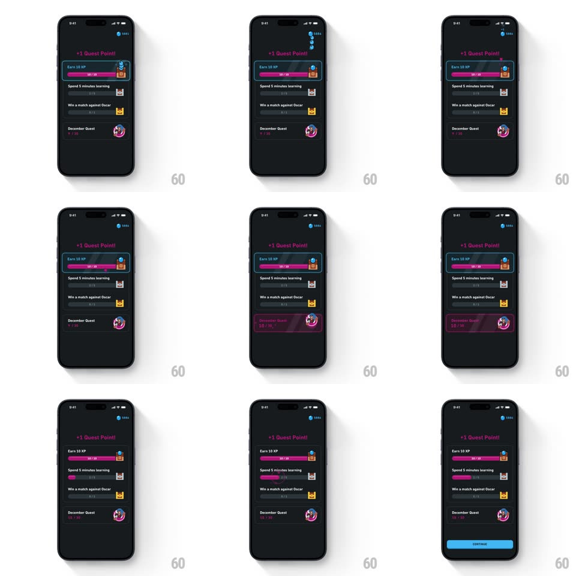

Media
Frame-by-frame

Rebuild this animation 1:1: Duolingo's quest reward trail - when the "Earn 10 XP" quest completes, a blue gem and a pink quest point fly from the quest card up to their counters as "+1 Quest Point!" lands.

Rebuild this animation 1:1: Duolingo's quest reward trail - when the "Earn 10 XP" quest completes, a blue gem and a pink quest point fly from the quest card up to their counters as "+1 Quest Point!" lands. ## Integration Integration: stack-agnostic spec - springs given as stiffness/damping, timed motions as duration + curve; map every value to your framework and animation library of choice. ## Scene Duolingo's quests screen, dark: a gem counter top-right, the pink "+1 Quest Point!" headline, and the quest list - "Earn 10 XP" (10/10, teal highlight border), "Spend 5 minutes learning", "Win a match against Oscar", and "December Quest" with its badge. A blue Continue button appears at the bottom at the end. ## Motion spec Pattern: reward tokens flying from a completed quest card to their counters. - The completed quest card flashes its teal border (border brightness pulse, 300ms) and its progress bar fills to 10/10 with a pink wipe (300ms). - The "+1 Quest Point!" headline pops in at the top (scale 0.8 -> 1.05 -> 1, spring ~400/14) in pink. - Then the trail: a blue gem lifts out of the quest card (scale 0.6 -> 1, 150ms) and arcs to the top-right gem counter along a bezier (450ms, ease-in), shrinking to 0.7 as it lands; the counter ticks up with a small scale bump (1 -> 1.2 -> 1, 200ms). - 150ms later a pink quest point flies from the card down to the December Quest badge (400ms, mirrored arc); the badge row highlights pink (200ms) as it lands. - The Continue button slides up last (translateY 24 -> 0, 250ms) once both tokens have landed. ## Calibration - The two tokens take distinct arcs to distinct targets - never one blob to one counter. - Counters only tick when their token lands, not when the flight starts. ## Reduced motion Tokens fade out at the card and the counters bump without flight paths. ## Don't miss - The card keeps its teal completed border for the rest of the sequence - the done state persists. - The headline is pink, matching the quest point - the gem's counter bump is the only blue beat at the top.